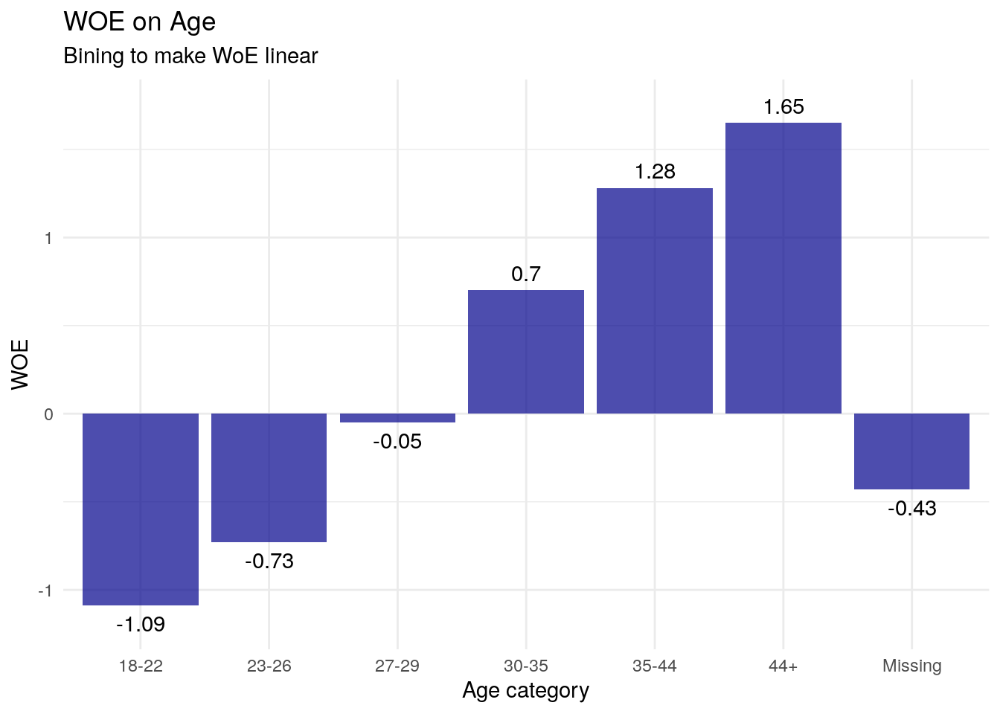
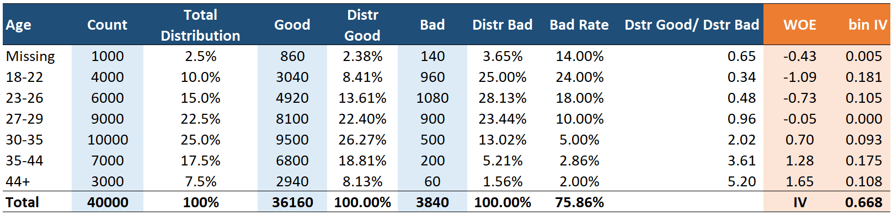
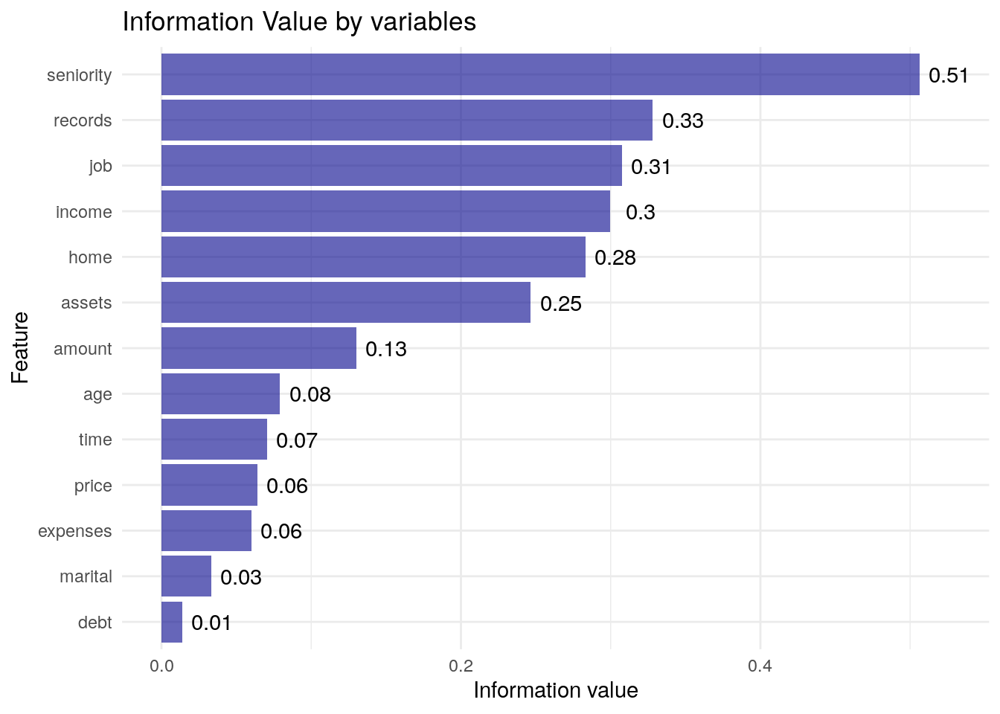
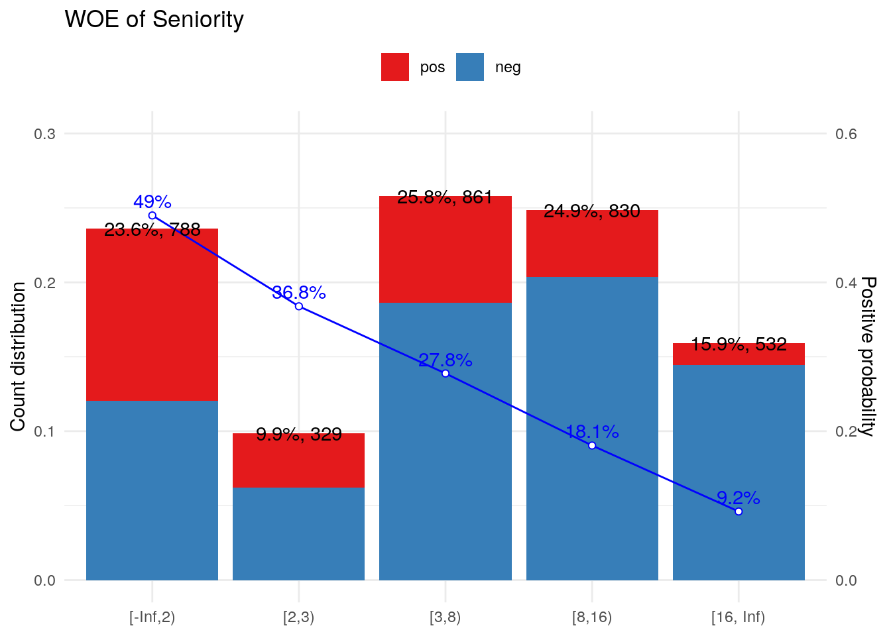
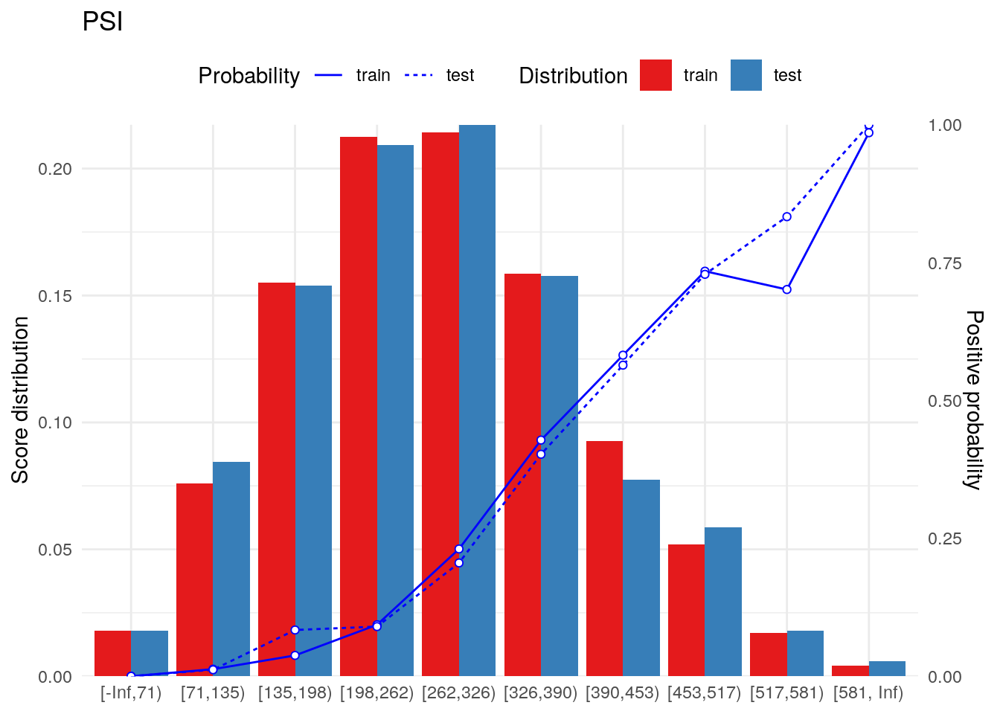

34 Credit Scoring
34.1 Giới thiệu
Chấm điểm tín dụng là việc áp dụng thuật toán cho phép đánh giá được mức độ rủi ro của một khách hàng khi nộp hồ sơ khoản vay. Chấm điểm tín dụng là kỹ thuật được ứng dụng rộng rãi trong lĩnh vực ngân hàng với mô hình logistics. Kỹ thuật scorecard khác với việc dự báo xác suất thông thường (probability) ở các điểm cơ bản sau:
- Chấm điểm tín dụng chuyển đổi thành các điểm
scorecardtrong một khoảng nhất định - Mỗi thông tin đầu vào (biến) sẽ được đánh thành các điểm khác nhau - tổng điểm của một khách hàng là tổng điểm thành phần của từng giá trị đầu vào
- Hệ thống scorecard luôn có 1 mốc điểm cho phép người ra quyết định đánh giá được độ rủi ro tăng thêm - gọi là điểm tăng gấp đôi mức rủi ro (
point double odd - pdo) - Khi xây dựng mô hình, bắt buộc biến đổi dữ liệu đầu vào thành các biến định dạng nhóm để dễ dàng xây scorecard.
Ưu điểm vượt trội của kỹ thuật xây dựng scorecard là khả năng ứng dụng dễ dàng cũng như dễ hiểu với các đơn vị kinh doanh.
34.2 Xây dựng scorecard
34.2.1 WOE & IV
Khi xây dựng scorecard, cần chia dữ liệu thành các nhóm khác nhau để dễ dàng hơn trong việc tính điểm. Việc chia nhóm này cần phải đảm báo tính tăng lên tuyến tính - nghĩa là mỗi nhóm (bucket) sau phải tỷ lệ xảy ra sự kiện (nợ xấu/vỡ nậu) tăng dần. Để thực hiện, ta áp dụng các chỉ số WOE - Weight of Evidence và IV - Information Value
WOE(Weight of Evidence): Đo lường độ mạnh của việc phân loại good vs. bad giữa một nhóm (ví dụ - khoảng tuổi từ 27-29). NếuWOEcó giá trị âm càng lớn, càng thể hiện khả năng khoản vay xấu trong nhóm càng cao.
\[WOE = ln(\frac{Distr\:Good}{Distr\: Bad}) \tag{1}\]
IV(Information Value): Đo lường độ mạnh dự báo của biến dự báo với biến cần được dự báo (response).
\[IV = \sum_{i = 1}^{n}(Distr\:Good - Distr\:Bad)*ln(\frac{Distr\:Good}{Distr\:Bad}) \tag{2}\]
Các đặc tính như sau: - IV < 0.02: Không có giá trị dự báo - 0.02 - 0.1: thấp - 0.1 - 0.3: trung bình - 0.3 - 0.5: cao - IV > 0.5: rất mạnh, cần kiểm tra thêm để giảm thiểu ảnh hưởng trực tiếp đến việc ra quyết định
Bảng tính toán WOE & IV như sau

Ở ví dụ trên, ta có thể thấy như sau:
- Tổng số khách hàng là 40000, trong đó có 36160 là
good, 3840 làbad - Với nhóm khách hàng từ 18-22 tuổi, có 4000 khách hàng
- 3040 khách hàng tốt - chiếm
8.41%tổng số khách hàng tốt (\(\frac{3040}{36160}\)) - 960 khách hàng xấu - chiếm
25%tổng số khách hàng xấu ()
- 3040 khách hàng tốt - chiếm
- WOE của độ tuổi 18-22 được tính như sau: \(WOE = ln(\frac{8.41\%}{25\%}) = -1.09\)
- IV của độ tuổi 18-22 được tính như sau: \(IV = (8.41\%-25\%) * ln(\frac{8.41\%}{25\%}) = 0.181\)
Tổng IV của biến age bằng tổng các thành phần IV của từng nhóm - có giá trị 0.668
Các quy tắc khi nhóm WOE
- Mỗi nhóm cần có tối thiểu 5% quan sát
- Khi nhóm các biến, cần đảm báo quy tắc WOE sau khi nhóm là tuyến tính (đồng biến hoặc nghịch biến)
Lưu ý: Xem thêm file excel (data/woe-example.xlsx)để hiểu rõ hơn cách tính WOE và IV
34.2.2 Các bước xây dựng
Xây dựng scorecard đi qua các bước chính sau
- Bước 1: Bổ sung các thông tin dữ liệu bị thiếu (
impute missing value) - Bước 2: Tính toán WOE và IV, loại các biến có IV quá thấp, kiểm tra lại các biến có IV quá cao
- Bước 3: Tạo tập dữ liệu mới đã có
df_woe, các biến đã được nhóm lại để tối ưu hóa WOE theo dạng tuyến tính - Bước 4: Xây dựng mô hình
logisticđơn giản trên tậpdf_woe - Bước 5: Tính score card cho từng biên, việc xây dựng score card cần thực hiện hai việc:
- Xác định
oddstại mốc điểm scorecard nhất định - Xác định điểm score card giúp tăng gấp đôi odds
- Xác định
- Bước 6: Dự báo trên tập dữ liệu mới
Odd ratio hay còn gọi là khả năng nợ xấu xảy ra. Odd được tính theo công thức sau.
\(odd = \frac{p}{1-p}\) với p là tỷ lệ khách hàng tốt (good)
Lưu ý
Cách tính odd ratio trong tính toán credit scoring ngược so với hàm logistic thông thường để đảm bảo sự tương quan đồng biến giữa điểm scoring và chất lượng khách hàng
- Điểm mặc định (
point 0) thường được dùng là 600. Mốc điểm này phản ánh một tỷ lệ odd cho trước - Điểm tăng gấp đôi odd (
point double odd - pdo): Là số điểm mà cứ tăng thêm pdo, odd sẽ tăng gấp đôi - thường là 20. Xem minh họa dưới đây
| Score | Odd |
|---|---|
| 600 | 30 |
| 601 | 31 |
| … | … |
| 620 | 60 |
Với điểm score tại mốc 600, tỷ lệ good:bad là 30:1. Khi score tăng thêm 20 điểm lên 620, tỷ lệ này tăng lên là 60:1.
Khi tính hệ số điểm cho score card từ mô hình logistics thông thường, ta có thể xây dựng như sau.
\[\text{Score} = (\beta.\text{WOE}+\frac{\alpha}{n}).\text{Factor}+\frac{\text{Offset}}{n} \tag{3}\]
Trong đó:
- \(\beta\): Hệ số của biến trong phương trình hồi qui logistic.
- \(\alpha\): Hệ số chặn của phương trình hồi qui logistic.
- \(\text{WOE}\): Giá trị WOE tại mỗi bước.
- \(\text{n}\): Số lượng các biến của mô hình.
- \(\text{Factor}, \text{Offset}\): Là các tham số được thiết lập để tính Score.
Trong đó, các tham số về factor và offset được tính như sau
- \(\text{Factor} = \frac{\text{pdo}}{\ln(2)} \tag{4}\)
- \(\text{Offset} = \text{Base Score}- \text{Factor} * \ln(\text{Odds}) \tag{5}\)
34.2.3 Đo lường độ ổn định mô hình
Xem bảng scorecard sau:
| Score_bands | Actual | Expected | Diff | log.Ac.Ex | Index |
|---|---|---|---|---|---|
| < 251 | 5% | 8% | -3% | -0.47 | 0.014 |
| 251–290 | 6% | 9% | -3% | -0.41 | 0.012 |
| 291–320 | 6% | 10% | -4% | -0.51 | 0.020 |
| 321–350 | 8% | 13% | -5% | -0.49 | 0.024 |
| 351–380 | 10% | 12% | -2% | -0.18 | 0.004 |
| 381–410 | 12% | 11% | 1% | 0.09 | 0.001 |
| 411–440 | 14% | 10% | 4% | 0.34 | 0.013 |
| 441–470 | 14% | 9% | 5% | 0.44 | 0.022 |
| 471–520 | 13% | 9% | 4% | 0.37 | 0.015 |
| 520 < | 9% | 8% | 1% | 0.12 | 0.001 |
Trong đó:
- \(log(\text{AC}/\text{EC}) = log(\frac{\text{Actual}}{\text{Expected}})\)
- \(\text{Diff} = \text{AC} - \text{EC}\)
- \(\text{Index} = (\text{AC} - \text{EC})*log(\frac{\text{AC}}{\text{EC}})\)
- \(\text{Population Stability Index (PSI)} = \sum{\text{Index}_{i}}\)
Đánh giá độ ổn định của mô hình
PSI < 0.1: Mô hình ổn định0.1 <= PSI <= 0.25: Kiểm tra lại mô hìnhPSI >= 0.25: Mô hình cần phải xây lại
Lưu ý:
- Default là 600 điểm tương ứng với
oddlà 20 (tỷ lệgood:badlà 20 ) pdolà 50 - cứ mỗi 50 điểm tăng thêm sẽ khiên chooddtăng gấp đôiBasepointlà điểm offset 485 điểm
34.3 Thực hành với R
34.3.1 Kiểm tra dữ liệu
Để phân tích, ta sử dụng dữ liệu credit_data trong package modeldata & xử lý dữ liệu trước bằng tidymodels.
library(tidymodels)
library(scorecard)
library(tidyverse)
library(modeldata)
data("credit_data")
# Xem dữ liệu
names(credit_data) <- names(credit_data) %>% tolower
credit_data %>% str'data.frame': 4454 obs. of 14 variables:
$ status : Factor w/ 2 levels "bad","good": 2 2 1 2 2 2 2 2 2 1 ...
$ seniority: int 9 17 10 0 0 1 29 9 0 0 ...
$ home : Factor w/ 6 levels "ignore","other",..: 6 6 3 6 6 3 3 4 3 4 ...
$ time : int 60 60 36 60 36 60 60 12 60 48 ...
$ age : int 30 58 46 24 26 36 44 27 32 41 ...
$ marital : Factor w/ 5 levels "divorced","married",..: 2 5 2 4 4 2 2 4 2 2 ...
$ records : Factor w/ 2 levels "no","yes": 1 1 2 1 1 1 1 1 1 1 ...
$ job : Factor w/ 4 levels "fixed","freelance",..: 2 1 2 1 1 1 1 1 2 4 ...
$ expenses : int 73 48 90 63 46 75 75 35 90 90 ...
$ income : int 129 131 200 182 107 214 125 80 107 80 ...
$ assets : int 0 0 3000 2500 0 3500 10000 0 15000 0 ...
$ debt : int 0 0 0 0 0 0 0 0 0 0 ...
$ amount : int 800 1000 2000 900 310 650 1600 200 1200 1200 ...
$ price : int 846 1658 2985 1325 910 1645 1800 1093 1957 1468 ...# Kiểm tra missing value
credit_data %>% map_dbl(function(x) mean(is.na(x))*100) status seniority home time age marital records
0.00000000 0.00000000 0.13471037 0.00000000 0.00000000 0.02245173 0.00000000
job expenses income assets debt amount price
0.04490346 0.00000000 8.55410867 1.05523125 0.40413112 0.00000000 0.00000000 34.3.2 Phân chia data
Chia train & test với tidymodels
set.seed(1)
split <- initial_split(credit_data, prop = 3/4)
credit_train <- training(split)
credit_test <- testing(split)34.3.3 Xử lý missing value
Với tỷ lệ biến missing ít, ta có thể làm như sau
- Với biến numeric - impute với
mean - Với biến category - impute với
mode
pre_processing <- recipe(status ~ ., credit_train) %>%
# Impute mean
step_impute_mean(all_numeric()) %>%
# Impute missing
step_impute_mode(all_nominal()) %>%
prep
pre_processing
# Xử lý missing
train_df <- pre_processing %>% bake(credit_train)
test_df <- pre_processing %>% bake(credit_test)
# Kiểm tra dữ liệu
train_df %>% map_dbl(function(x){mean(is.na(x))})seniority home time age marital records job expenses
0 0 0 0 0 0 0 0
income assets debt amount price status
0 0 0 0 0 0 test_df %>% map_dbl(function(x){mean(is.na(x))})seniority home time age marital records job expenses
0 0 0 0 0 0 0 0
income assets debt amount price status
0 0 0 0 0 0 34.3.4 Bin với WOE
Sử dụng hàm woebin để nhóm tất cả các biến theo WOE
# bins
bins_var <- woebin(train_df, y = "status", no_cores = 1, positive = "bad|1")✔ Binning on 3340 rows and 14 columns in 00:00:07# Đánh giá iv các biến
woe_value <- bins_var %>%
map_dfr(~ slice(.x, 1) %>%
select(total_iv)) %>%
mutate(var_name = names(bins_var))
woe_value total_iv var_name
1: 0.50645224 seniority
2: 0.28316535 home
3: 0.07064229 time
4: 0.07914844 age
5: 0.03303875 marital
6: 0.32816575 records
7: 0.30771215 job
8: 0.06021468 expenses
9: 0.29983220 income
10: 0.24664247 assets
11: 0.01385609 debt
12: 0.13006752 amount
13: 0.06418546 price# Vizualize kết quả
woe_value %>%
ggplot(aes(fct_reorder(var_name, total_iv), total_iv)) +
geom_col(fill = "darkblue", alpha = 0.6) +
geom_text(aes(label = round(total_iv, 2)), nudge_y = 0.02) +
coord_flip() +
labs(title = "Information Value by variables",
x = "Feature",
y = "Information value")
Lưu ý
Scorecardđược xây dựng theo hướng điểm càng cao thì khách hàng càng tốt. Trong packagescorecard, WOE được tính đảo ngược lại, nghĩa là \(WOE = ln(\frac{Distr\:Bad}{Distr\:Good})\).- Do đó, với bucket nào có hệ số dương, nhóm đó có xu hướng tăng nợ xấu. Điều này khiến cho điểm
scorecardtỷ lệ nghịch với điểm xác suất dự báo xảy ra sự kiện vỡ nợ.
# Set theme
theme_score <- function() {
list(
theme_minimal(),
theme(legend.position = "top"),
scale_fill_brewer(palette = "Set1")
)
}
bins_var$seniority %>%
woebin_plot %>%
pluck(1) +
theme_score() +
labs(title = "WOE of Seniority")
34.3.5 Xây dựng mô hình logistic
Để xây dựng mô hình logistics, ta cần làm 2 bước:
- Biến đổi sang woe (nhóm biến)
- Xây dựng mô hình
# Biến đổi sang woe
train_woe <- woebin_ply(train_df, bins_var)✔ Woe transformating on 3340 rows and 13 columns in 00:00:00test_woe <- woebin_ply(test_df, bins_var)✔ Woe transformating on 1114 rows and 13 columns in 00:00:00# Kiểm tra
train_woe %>% head status seniority_woe home_woe time_woe age_woe marital_woe
1: bad 0.8893389 0.6009302 0.13213105 0.19368198 0.2928007
2: bad -0.5815039 0.7931946 -0.93079876 0.02035184 -0.1131482
3: good 0.3882060 -0.0101478 -0.46056911 0.49753266 0.2928007
4: good -1.3582428 -0.5649494 0.13213105 -0.40211922 -0.1131482
5: good -0.5815039 -0.5649494 -0.01864539 0.19368198 -0.1131482
6: bad 0.8893389 -0.0101478 0.13213105 0.19368198 -0.1131482
records_woe job_woe expenses_woe income_woe assets_woe debt_woe
1: 1.1197101 -0.3940776 0.1329176 0.6601977 0.5589859 0.02486336
2: -0.3011832 0.2417366 0.5485860 0.6195801 0.5589859 0.02486336
3: -0.3011832 1.3060048 0.1329176 0.6195801 -0.5238383 0.02486336
4: -0.3011832 -0.3940776 -0.2261826 -0.3432183 -0.5238383 0.02486336
5: -0.3011832 -0.3940776 -0.2261826 -0.6315449 -0.5238383 -0.49408111
6: 1.1197101 -0.3940776 0.5485860 -0.6315449 0.5589859 0.02486336
amount_woe price_woe
1: 0.73819163 0.44329832
2: -0.30751006 0.46860802
3: -0.30751006 0.19284328
4: 0.04628808 -0.03386972
5: -0.30751006 0.19284328
6: 0.37850111 -0.03386972# Xây dựng mô hình
log_model <- glm(status ~ ., family = binomial, data = train_woe)
# Kết quả
log_model %>% summary
Call:
glm(formula = status ~ ., family = binomial, data = train_woe)
Coefficients:
Estimate Std. Error z value Pr(>|z|)
(Intercept) 0.943989 0.047510 19.869 < 2e-16 ***
seniority_woe -0.748749 0.074176 -10.094 < 2e-16 ***
home_woe -0.686997 0.115432 -5.952 2.66e-09 ***
time_woe -1.151450 0.207609 -5.546 2.92e-08 ***
age_woe -0.121794 0.180343 -0.675 0.499456
marital_woe 0.361103 0.276235 1.307 0.191134
records_woe -1.222635 0.081285 -15.041 < 2e-16 ***
job_woe -0.745368 0.085671 -8.700 < 2e-16 ***
expenses_woe -0.683878 0.193906 -3.527 0.000421 ***
income_woe -0.974402 0.086879 -11.216 < 2e-16 ***
assets_woe -0.411371 0.126878 -3.242 0.001186 **
debt_woe 0.004736 0.408928 0.012 0.990759
amount_woe -1.151344 0.137564 -8.369 < 2e-16 ***
price_woe -0.734577 0.190307 -3.860 0.000113 ***
---
Signif. codes: 0 '***' 0.001 '**' 0.01 '*' 0.05 '.' 0.1 ' ' 1
(Dispersion parameter for binomial family taken to be 1)
Null deviance: 3979.3 on 3339 degrees of freedom
Residual deviance: 2888.1 on 3326 degrees of freedom
AIC: 2916.1
Number of Fisher Scoring iterations: 534.3.6 Xây dựng scorecard
scoring_card <- scorecard(bins_var, # WOE model
log_model, # Mô hình logistics
points0 = 600, # Base line 600
odds0 = 1/20, # Odd tại base line - 20
pdo = 50) # PDO - 50
scoring_card$seniority variable bin count count_distr neg pos posprob woe
1: seniority [-Inf,2) 788 0.23592814 402 386 0.48984772 0.88933886
2: seniority [2,3) 329 0.09850299 208 121 0.36778116 0.38820605
3: seniority [3,8) 861 0.25778443 622 239 0.27758420 -0.02652296
4: seniority [8,16) 830 0.24850299 680 150 0.18072289 -0.58150392
5: seniority [16, Inf) 532 0.15928144 483 49 0.09210526 -1.35824277
bin_iv total_iv breaks is_special_values points
1: 0.2139890902 0.5064522 2 FALSE 48
2: 0.0159920429 0.5064522 3 FALSE 21
3: 0.0001802944 0.5064522 8 FALSE -1
4: 0.0728012001 0.5064522 16 FALSE -31
5: 0.2034896155 0.5064522 Inf FALSE -7334.3.7 Dự báo với tập dữ liệu mới
# Dự báo xác suất
test_pred <- predict(log_model, test_woe, type = "response")
# Score card mới
score_result <- scorecard_ply(credit_test, scoring_card, only_total_score = F)
truth_label <- test_woe$status %>% fct_rev %>% as.numeric
truth_label <- truth_label - 1
# AUC
yardstick::roc_auc_vec(truth_label %>% as.factor, test_pred)[1] 0.8129952# Perf eva
#perf_eva(test_pred, truth_label)
perf_psi(test_pred, truth_label)$psi
Null data.table (0 rows and 0 cols)# Đánh giá điểm score
score_result %>%
select(score) %>%
mutate(prob = test_pred) %>%
mutate(odd = (1 - prob)/prob) %>%
filter(score >= 600) %>%
head score prob odd
1: 614 0.04009095 23.94329
2: 600 0.04746132 20.06979
3: 649 0.02455098 39.73157
4: 604 0.04498615 21.2290634.3.8 Độ ổn định mô hình
train_score <- scorecard_ply(credit_train, scoring_card)
test_score <- scorecard_ply(credit_test, scoring_card)
train_score score
1: NA
2: 323
3: 356
4: 128
5: 125
---
3336: 373
3337: 219
3338: 330
3339: NA
3340: 272psi <- perf_psi(
score = list(train = train_score, test = test_score),
label = list(train = as.numeric(fct_rev(credit_train$status)) - 1,
test = as.numeric(fct_rev(credit_test$status)) - 1)
)
# Giá trị PSI
psi$psi variable dataset psi
1: score train_test 0.005166308# Vizulize PSI
psi$pic$score +
theme_score() +
labs(title = "PSI")
34.4 Tài liệu tham khảo
- http://ucanalytics.com/blogs/information-value-and-weight-of-evidencebanking-case
- IFRS 9 and CECL Credit Risk Modelling and Validation - A Practical Guide with Examples Worked in R and SAS
- https://rstudio-pubs-static.s3.amazonaws.com/376828_032c59adbc984b0ab892ce0026370352.html
- https://multithreaded.stitchfix.com/blog/2015/08/13/weight-of-evidence/